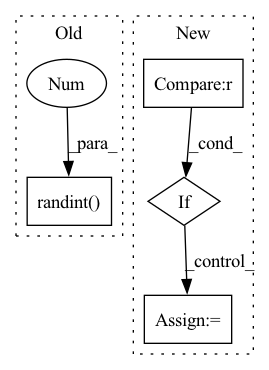

Pattern ID :5549
Before Change
self._learner.download(path="bisenet_camvid")
self._learner.load("bisenet_camvid")
self._colors = np.random.randint( 0, 256 , (256, 3), dtype=np.uint8)
def listen(self):
Start the node and begin processing input dataAfter Change
else:
self.heatmap_publisher = None
if output_rgb_image_topic is not None :
self.visualization_publisher = rospy.Publisher(output_rgb_image_topic, ROS_Image, queue_size=1)
else:
self.visualization_publisher = None
In pattern: SUPERPATTERN
Frequency: 4
Non-data size: 4
Instances Fragment ID: 19574456
Project Name: opendr-eu/opendr
Commit Name: f71fb87f1d6570e732564b2cccde3bc15e958c65
Time: 2022-09-01
Author: 27914645+tsampazk@users.noreply.github.com
File Name: projects/opendr_ws/src/perception/scripts/semantic_segmentation_bisenet.py
M Class Name: BisenetNode
N Class Name: BisenetNode
M Method Name: __init__(5)
N Method Name: __init__(4)
M Parent Class:
N Parent Class:
M File Name: projects/opendr_ws/src/perception/scripts/semantic_segmentation_bisenet.py
N File Name: projects/opendr_ws/src/perception/scripts/semantic_segmentation_bisenet.py
M Start Line: 42
M End Line: 60
N Start Line: 34
N End Line: 69
Before Change
// sampling
sample_index = np.random.randint(0 , embeds.shape[0], sample_num)
sample_embeds = embeds[sample_index]
sample_labels = labels[sample_index]
// t-SNEAfter Change
:return: figure
// exception
if sample_num>embeds.shape[0] :
print("Value Error: Sample larger than population")
return
// sampling
random.seed(1)
sample_index = random.sample(range(0, embeds.shape[0]), sample_num)
sample_index.sort()
sample_embeds = embeds[sample_index]
sample_labels = labels[sample_index]
// getting cluster number
unique = np.unique(sample_labels)
clusters = np.size(unique, axis=0)
// t-SNE
Fragment ID: 19574457
Project Name: yueliu1999/awesome-deep-graph-clustering
Commit Name: df330639feebdd4ddc6181c80228b04579e60b72
Time: 2022-03-31
Author: 39847636+Jinjiaqi98@users.noreply.github.com
File Name: visualization.py
M Class Name: AnonimousClass
N Class Name: AnonimousClass
M Method Name: t_sne(4)
N Method Name: t_sne(4)
M Parent Class:
N Parent Class:
M File Name: visualization.py
N File Name: visualization.py
M Start Line: 23
M End Line: 44
N Start Line: 24
N End Line: 37
Before Change
for col in df.columns:
if col in ["name-cat", "label", "id"]:
break
df[col].iloc[random.randint(1 , imax - 1) ] = None
df[col].iloc[random.randint(1, imax - 1)] = None
datadir = tmpdir_factory.mktemp("data_test")After Change
break
for _ in range(2):
rand_idx = random.randint(1, imax - 1)
if rand_idx == df[col].shape[0] // 2 :
// dont want null in median
rand_idx += 1
df[col].iloc[rand_idx] = None
datadir = tmpdir_factory.mktemp("data_test") Fragment ID: 19574450
Project Name: nvidia/nvtabular
Commit Name: 36f7c31fa1711f2ba4fac2bf49d8ccf1c76f051b
Time: 2021-03-31
Author: 37191411+jperez999@users.noreply.github.com
File Name: tests/conftest.py
M Class Name: AnonimousClass
N Class Name: AnonimousClass
M Method Name: datasets(1)
N Method Name: datasets(1)
M Parent Class:
N Parent Class:
M File Name: tests/conftest.py
N File Name: tests/conftest.py
M Start Line: 107
M End Line: 112
N Start Line: 111
N End Line: 118
Before Change
// batch-wise random inverse normal vector (prob: 0.5)
if random_inv:
random_mask = torch.randint(0 , 2, (group_xyz.size(0), 1)) .float() * 2. - 1.
random_mask = random_mask.to(unit_nor.device)
if not is_group:
unit_nor = unit_nor * random_maskAfter Change
// batch-wise random inverse normal vector (prob: 0.5)
if random_inv:
batch_prob = np.random.rand(offset.shape[0]) < 0.5
random_mask = []
sample_offset = [0] + list(offset.cpu().numpy())
for idx in range(len(sample_offset) - 1):
sample_mask = torch.ones((sample_offset[idx+1] - sample_offset[idx], 1), dtype=torch.float32)
if not batch_prob[idx]:
sample_mask *= -1
random_mask.append(sample_mask)
random_mask = torch.cat(random_mask, dim=0).to(unit_nor.device)
// random_mask = torch.randint(0, 2, (group_xyz.size(0), 1)).float() * 2. - 1. Fragment ID: 19574451
Project Name: hancyran/repsurf
Commit Name: e320999634bd03b5020e1af0092663c02c862ba8
Time: 2022-09-18
Author: ranhaoxi@gmail.com
File Name: segmentation/modules/recons_utils.py
M Class Name: AnonimousClass
N Class Name: AnonimousClass
M Method Name: cal_normal(4)
N Method Name: cal_normal(3)
M Parent Class:
N Parent Class:
M File Name: segmentation/modules/recons_utils.py
N File Name: segmentation/modules/recons_utils.py
M Start Line: 28
M End Line: 29
N Start Line: 10
N End Line: 37